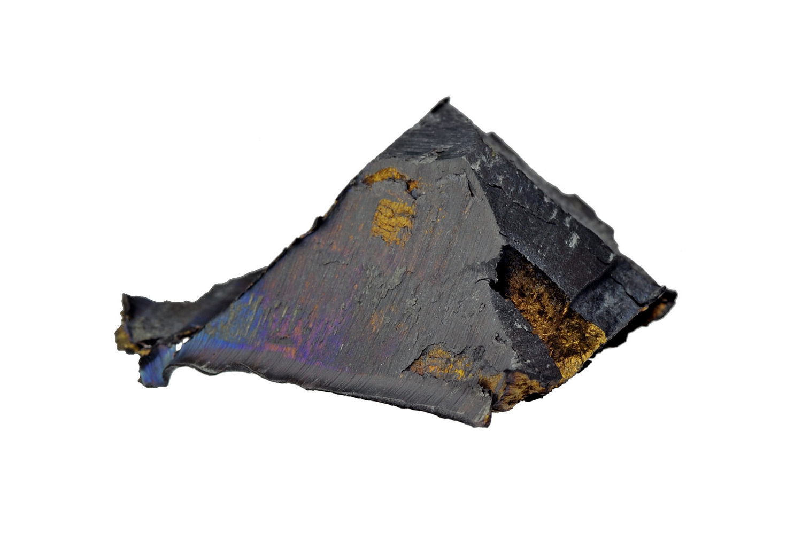

| Property |
Value |
| Element Name |
Cerium |
| Atomic Mass |
140.12 u |
| Atomic Number |
58 |
| Number of Isotopes |
4 stable isotopes, along with several radioactive isotopes |
| Mass Number (Isotopes) |
Cerium-140, Cerium-142, Cerium-143, Cerium-144 (Cerium-145 is radioactive) |
| Melting Temperature |
798 °C |
| Boiling Temperature |
3230 °C |
| Density |
6.77 g/cm³ |
| Electronegativity |
1.12 (Pauling Scale) |
| Year of Discovery |
1803 (Discovered by Jöns Jakob Berzelius and Wilhelm Hisinger) |
| Abundance |
The most abundant lanthanide in Earth's crust (0.006% of Earth's crust). |
| Technological Applications |
- Catalysts for automobiles (reduces toxic emissions).
- Glass polishing for optical lenses, screens, and surfaces.
- Metal alloys for lighter flints (mischmetal).
- Fuel cells (SOFC).
- Glass and ceramics industry.
|
| Deposit Locations |
- Bastnäsite (CeCO₃F) and Monazite (CePO₄).
|
| Main Producing Countries |
- China (dominant in the rare earth market).
- Brazil, India, Russia, United States, Vietnam.
|
| Health Effects |
Inhaling cerium dust may cause lung irritation and respiratory issues. |
| Environmental Effects |
Accumulates in sediments and soils, with limited toxicity for aquatic organisms. |
